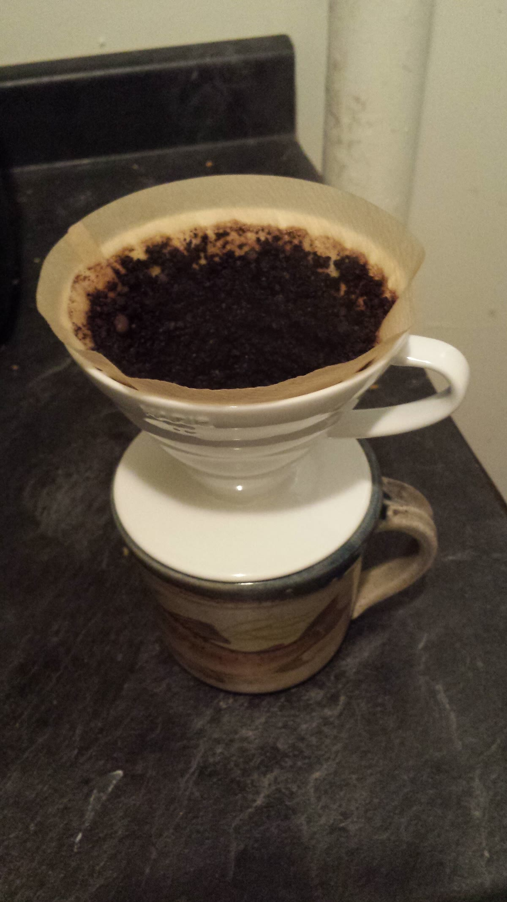

The roast log
Every batch, dated and stamped. When a lot sells out, its line stays — struck through, not deleted. If a batch ever disappoints us at the bench, that goes in the log too.
THU 22 OCT
Bandarban Lot 7 Washed process — cocoa, jaggery, a little citrus at the end
Resting — brew from 29 Oct
THU 15 OCT
House Blend No. 2 Bandarban + Brazil Cerrado — milk chocolate, roasted nuts
In the window
THU 08 OCT
Bandarban Lot 6 Washed process — the last of the early harvest
Sold out Sun 11 Oct
THU 01 OCT
House Blend No. 1 The first blend — sweeter, less consistent. No. 2 replaced it.
Sold out Sat 03 Oct
THU 24 SEP
Bandarban Lot 5 Natural process experiment — funky, divisive. We won't repeat it this season.
Sold out Sun 27 Sep


Every batch is cupped at the bench before a single bag is stamped. The notes in this log are the bench notes — written the same day, not polished later for the website.
Check your bag against the window →